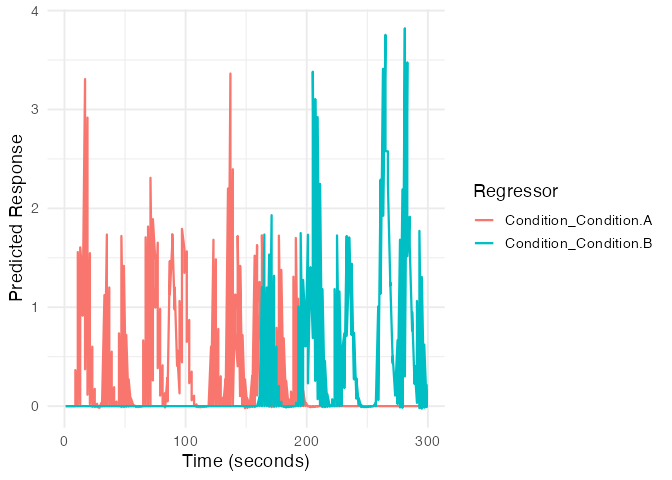
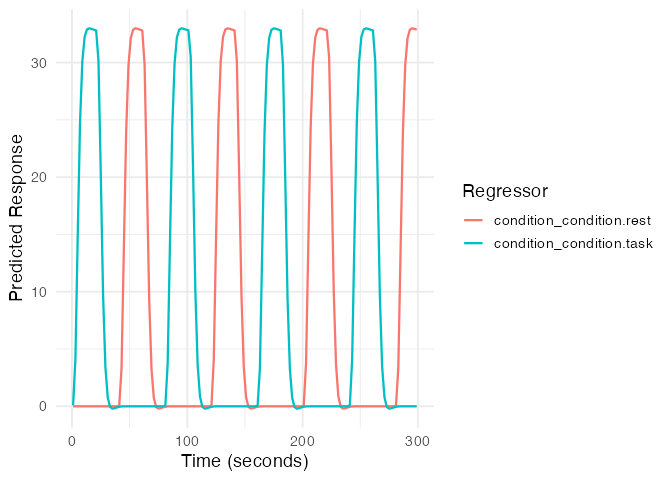

Overview
The fmridesign package constructs design matrices for
fMRI general linear model (GLM) analysis. It provides a formula-based
interface for specifying event-related designs with flexible hemodynamic
response functions, parametric modulators, and baseline/nuisance
regressors.
The package separates task-related regressors (event models) from baseline regressors (drift, intercepts, motion), provides informative column names, and includes visualization tools for quality control.
The fMRI Design Matrix
In fMRI analysis, the design matrix (X) is fundamental to the general linear model:
Y = Xβ + εWhere: - Y: Observed BOLD signal time series - X: Design matrix containing predictors - β: Parameter estimates (regression coefficients) - ε: Error term (noise)
The design matrix typically combines task-related predictors (expected responses to events) and nuisance predictors (drift, motion, physiology). Both are essential for reliable inference.
Package Architecture
The package uses two main components:
Event models (event_model()) specify
task-related regressors. You provide onset times, event types, and
optional durations. Each term can use a different HRF basis function.
The model supports factorial designs, parametric modulators, and
trial-specific covariates.
Baseline models (baseline_model())
specify nuisance regressors. You can add polynomial or spline drift
terms, block-wise intercepts, and any additional nuisance regressors
(motion, physiological noise, etc.).
Quick Start: Complete Workflow
Here’s a minimal example demonstrating the complete workflow from experimental design to design matrix:
# 1. Define the temporal structure (2 runs, 150 scans each, TR = 2s)
TR <- 2
sframe <- sampling_frame(blocklens = c(150, 150), TR = TR)
# 2. Create experimental events
set.seed(123)
# Simple two-condition design with 20 events per run
conditions <- rep(c("A", "B"), each = 10, times = 2)
onsets <- c(
sort(runif(20, 0, 150 * TR - 10)), # Run 1
sort(runif(20, 0, 150 * TR - 10)) # Run 2
)
blockids <- rep(1:2, each = 20)
# 3. Build the event model
emodel <- event_model(
onset ~ hrf(Condition, basis = "spmg1"),
data = data.frame(
onset = onsets,
Condition = factor(conditions),
block = factor(blockids)
),
block = ~ block,
sampling_frame = sframe
)
# 4. Build the baseline model
bmodel <- baseline_model(
basis = "poly",
degree = 3,
sframe = sframe
)
# 5. Extract design matrices
X_task <- design_matrix(emodel)
X_baseline <- design_matrix(bmodel)
# 6. Combine into full design matrix
X_full <- cbind(X_task, X_baseline)
dim(X_full)
#> [1] 300 10
# 7. Visualize the complete design
plot(emodel)
Understanding the Components
Sampling Frame
The sampling_frame object defines the temporal structure
of your fMRI data:
# Single run: 200 scans, TR = 2 seconds
sframe_single <- sampling_frame(blocklens = 200, TR = 2)
print(sframe_single)
#> Sampling frame
#> - Blocks: 1
#> - Scans: 200 (per block: 200 )
#> - TR: 2 s
#> - Duration: 399 s
# Multiple runs: 3 runs with different lengths
sframe_multi <- sampling_frame(blocklens = c(150, 200, 150), TR = 2)
print(sframe_multi)
#> Sampling frame
#> - Blocks: 3
#> - Scans: 500 (per block: 150, 200, 150 )
#> - TR: 2 s
#> - Duration: 999 sEvent Specification
Events are typically specified with the formula interface:
# Formula interface (recommended)
emodel_formula <- event_model(
onset ~ hrf(condition) + hrf(RT, basis = "gaussian"),
data = data.frame(
onset = c(10, 30, 50, 70),
condition = factor(c("easy", "hard", "easy", "hard")),
RT = c(0.5, 0.8, 0.4, 0.9),
block = factor(c(1, 1, 1, 1))
),
block = ~ block,
sampling_frame = sampling_frame(100, TR = 2)
)Common Use Cases
1. Block Design
# Block design with 20-second blocks
block_onsets <- seq(0, 280, by = 40)
block_conditions <- rep(c("task", "rest"), length.out = length(block_onsets))
block_durations <- rep(20, length(block_onsets))
emodel_block <- event_model(
onset ~ hrf(condition),
data = data.frame(
onset = block_onsets,
condition = factor(block_conditions),
block = factor(rep(1, length(block_onsets)))
),
block = ~ block,
durations = block_durations,
sampling_frame = sampling_frame(150, TR = 2)
)
plot(emodel_block)
2. Rapid Event-Related Design
# Rapid event-related with jittered ISI
set.seed(456)
n_events <- 60
rapid_onsets <- cumsum(runif(n_events, 2, 6)) # ISI between 2-6s
rapid_conditions <- sample(c("face", "house", "object"), n_events, replace = TRUE)
emodel_rapid <- event_model(
onset ~ hrf(stimulus),
data = data.frame(
onset = rapid_onsets,
stimulus = factor(rapid_conditions),
block = factor(rep(1, n_events))
),
block = ~ block,
sampling_frame = sampling_frame(ceiling(max(rapid_onsets)/2) + 20, TR = 2)
)
# Check design efficiency
cor(design_matrix(emodel_rapid))
#> stimulus_stimulus.face stimulus_stimulus.house
#> stimulus_stimulus.face 1.0000000 -0.29766943
#> stimulus_stimulus.house -0.2976694 1.00000000
#> stimulus_stimulus.object -0.3687703 -0.09145211
#> stimulus_stimulus.object
#> stimulus_stimulus.face -0.36877029
#> stimulus_stimulus.house -0.09145211
#> stimulus_stimulus.object 1.000000003. Parametric Modulation
# Event-related design with RT modulation
set.seed(789)
n_trials <- 30
pm_onsets <- sort(runif(n_trials, 0, 200))
pm_conditions <- rep(c("congruent", "incongruent"), length.out = n_trials)
pm_RT <- rnorm(n_trials, mean = ifelse(pm_conditions == "congruent", 0.5, 0.7), sd = 0.1)
emodel_parametric <- event_model(
onset ~ hrf(condition) + hrf(RT),
data = data.frame(
onset = pm_onsets,
condition = factor(pm_conditions),
RT = scale(pm_RT)[,1], # Center the parametric modulator
block = factor(rep(1, n_trials))
),
block = ~ block,
sampling_frame = sampling_frame(120, TR = 2)
)
# Visualize the parametric modulator
plot(emodel_parametric, term_name = "RT")
Integration with fMRI Analysis
The design matrices created by fmridesign can be used
with various fMRI analysis approaches:
# Example: Export for use with external software
X <- cbind(design_matrix(emodel), design_matrix(bmodel))
# Save as text file for SPM, FSL, or AFNI
write.table(X, "design_matrix.txt", row.names = FALSE, col.names = TRUE)
# For use with R-based analysis
# Assuming Y is your fMRI time series data
# fit <- lm(Y ~ X - 1) # -1 removes intercept as it's in the design
# Or use with specialized fMRI packages
# library(fmri)
# results <- fmri_glm(Y, X)Best Practices
Inspect your design matrices visually. Check that event timing is correct, HRF shapes are reasonable, and correlations between regressors are acceptable.
Optimize design efficiency. Use jittered inter-stimulus intervals and balanced event types when possible.
Match drift models to run length. Short runs (< 5 minutes) need fewer drift terms than long runs.
Include nuisance regressors. Add motion parameters, physiological noise, and artifact flags to your baseline model.
Next Steps
For more detailed information, see the following vignettes:
-
vignette("a_03_baseline_model"): In-depth coverage of baseline and nuisance modeling -
vignette("a_04_event_models"): Comprehensive guide to event model specification - Visit the fmrihrf package documentation for HRF details
Getting Help
If you encounter issues or have questions:
- Check the function documentation:
?event_model,?baseline_model - Browse all available HRFs:
list_available_hrfs() - Report issues: GitHub Issues